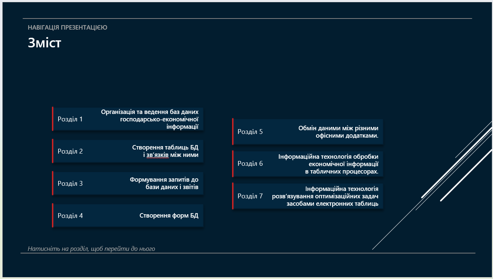
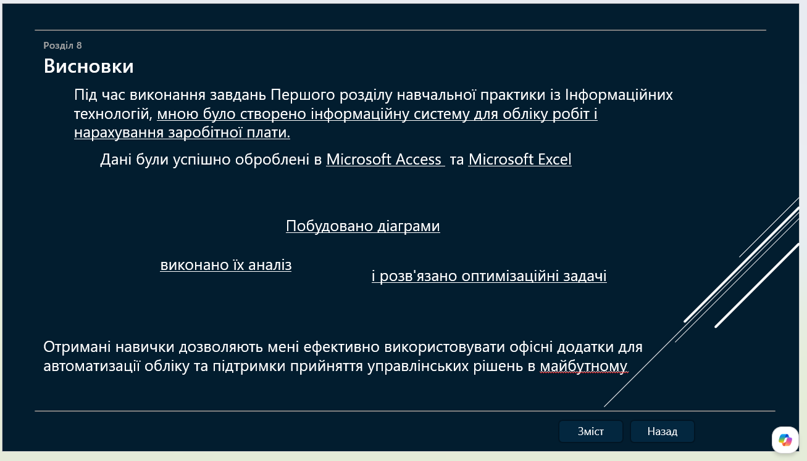

Звіт
1.7. Застосування мультимедійних технологій для наочного відображення економічної інформації й звітності
Я створив презентацію на 13 слайдів, яка містить титульну сторінку, зміст, заголовки відповідно до змісту, зображення таблиці, списки.
Застосував шаблон теми та встановив автоматичний перехід між усіма слайдами через 10 секунд.
Зміст містить 8 пунктів, створених квадратними формами, оформленими відповідно до стилю презентації. Їм я дав дію «Перейти за гіперпосиланням → Слайд…» і зробив посилання на слайди.
Також необхідно було додати кнопки навігації «Назад», «Вперед» і «Зміст». Для цього я створив 3 однакові фігури, оформив їх і надав дію «Перейти на попередній слайд», «Перейти на наступний слайд» та «Перейти на слайд 2».
Копіюю ці кнопки та вставляю на ті самі місця на кожному слайді після змісту.
Для перегляду презентації натискаємо клавішу F5 або «Показ слайдів» → «З початку».

Титульний слайд

Слайд зі змістом

Останній слайд із висновками
Розділ 2. «Використання мережних технологій в обліку»
2.1. Пошук інформації в мережі Інтернет
У моєму варіанті темою для реферату стала «Порядок розрахунку по лікарняним листам». Для пошуку та збору інформації я використовував пошукову систему Google. Оскільки це питання державного регулювання, я брав інформацію із владних джерел: інформаційного порталу Верховної Ради України, а саме Постанову КМУ №1266, Постанову КМУ №440 та Лист Мінсоцполітики №319/18/99-15, а також алгоритм здійснення виплат від Пенсійного фонду України.
Якщо коротко: розрахунок допомоги по тимчасовій непрацездатності в Україні здійснюється відповідно до Постанови КМУ №1266, яка визначає порядок обчислення середньої заробітної плати, та Постанови КМУ №440, що регулює оплату перших п'яти днів лікарняного за рахунок роботодавця. Сума допомоги розраховується як добуток середньоденної заробітної плати (з урахуванням страхового стажу) на кількість оплачуваних днів. Офіційні роз'яснення Міністерства соціальної політики та Пенсійного фонду уточнюють порядок використання даних для розрахунку та джерела їх отримання.
Перші 5 днів непрацездатності оплачує роботодавець, починаючи з 6-го дня, виплати фінансує Пенсійний фонд України.